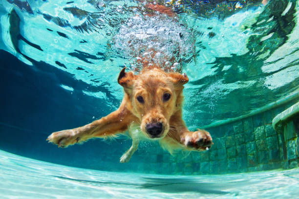
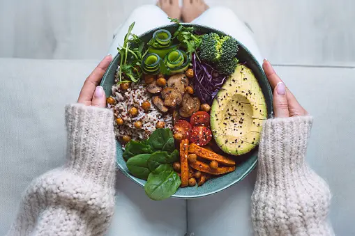
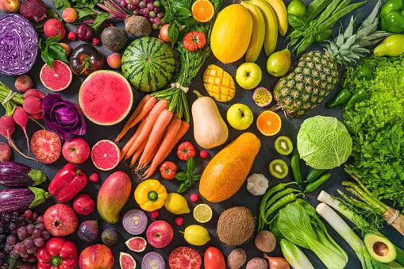
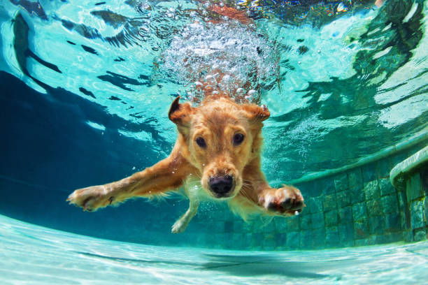
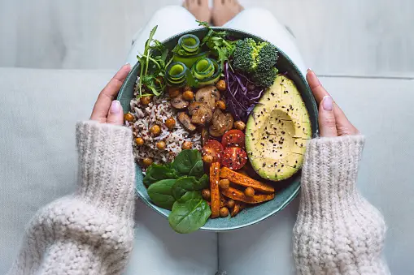
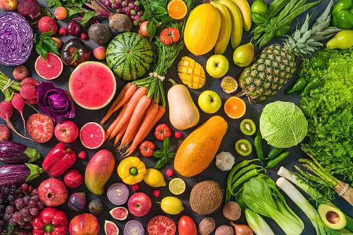

Sobre mi:
Mi nombre es Yesica Baez , soy nutricionista estudie en la Facultad de medicina Fundación Barceló.
Me especialice en alimentación basada en plantas(Veganismo, Vegetarianismo, Flexi-Vegetarianismo), en la facultad de medicina de Rosario.
Soy vegetariana desde los 16 años y actualmente vegana. Amo a todos los animales.
En el hospital Tornu me especialice en obesidad y sobrepeso.

Charlas de Salud:
Desde hace años realizo charlas grupales y voluntarias en diferentes centros vecinales, grupo de auto ayuda, como charlas junto a mi amiga que se dedica a la psicologia alimenticia.
Estas charlas estan dirigidas a personas que no puede acceder a una primera atencion o consulta sobre una nutricion sana y en ese espacio le damos la posibilidad de aprender como alimentarse, como autocontrolarse (saliendo del estereotipo de prohibicion de alimentos) y a la vez le damos la posibilidad de que nos realicen preguntas y entre todos aprenser que una buena alimentacion salva y alarga vidas.
Si te gustaria que vaya a tu barrio, no dudes en ponerte en contacto conmigo y coordinaremos una futura visita.
Mis Consultas.
Cada consulta dura 60 minutos. La misma puede ser presencial o virtual. Las consultas virtuales se realizan por Meet, previo acuerdo del horario. Te ofrezco una mirada integrativa, aplicando todos mis conocimientos, ademas de mis años de práctica clínica. Realizo una anamnesis profunda de hábitos alimentarios, rutinas, conocimientos previos en nutrición, antecedentes de enfermedades, gustos, etc. Con estos datos realizo un diagnóstico y acordamos los objetivos a trabajar. Cada paciente recibirá consejos y pautas adaptados a sus necesidades particulares.

.jpeg)
.jpeg)


 




